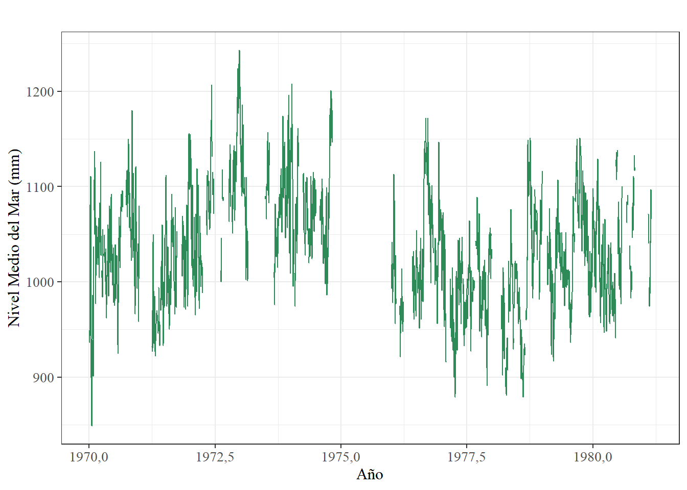
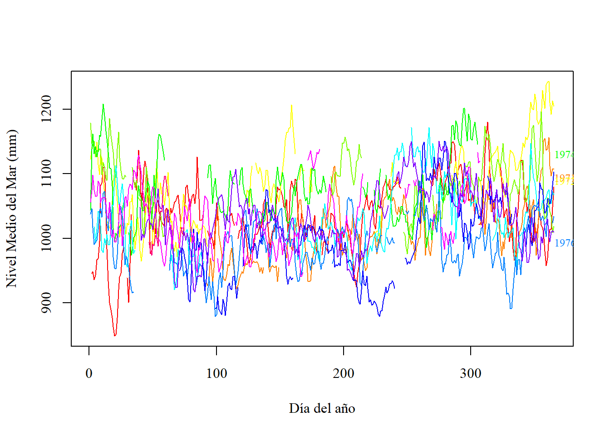
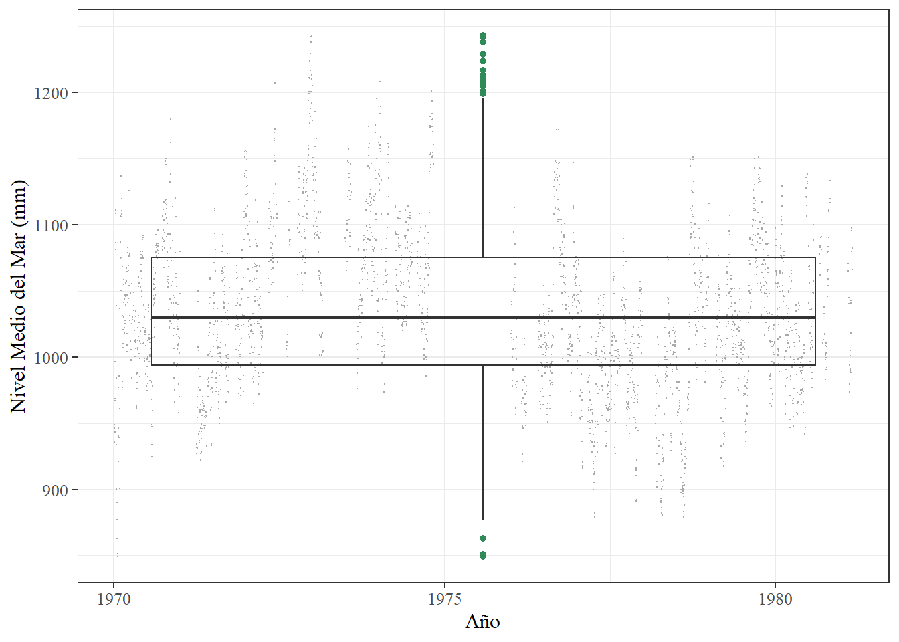
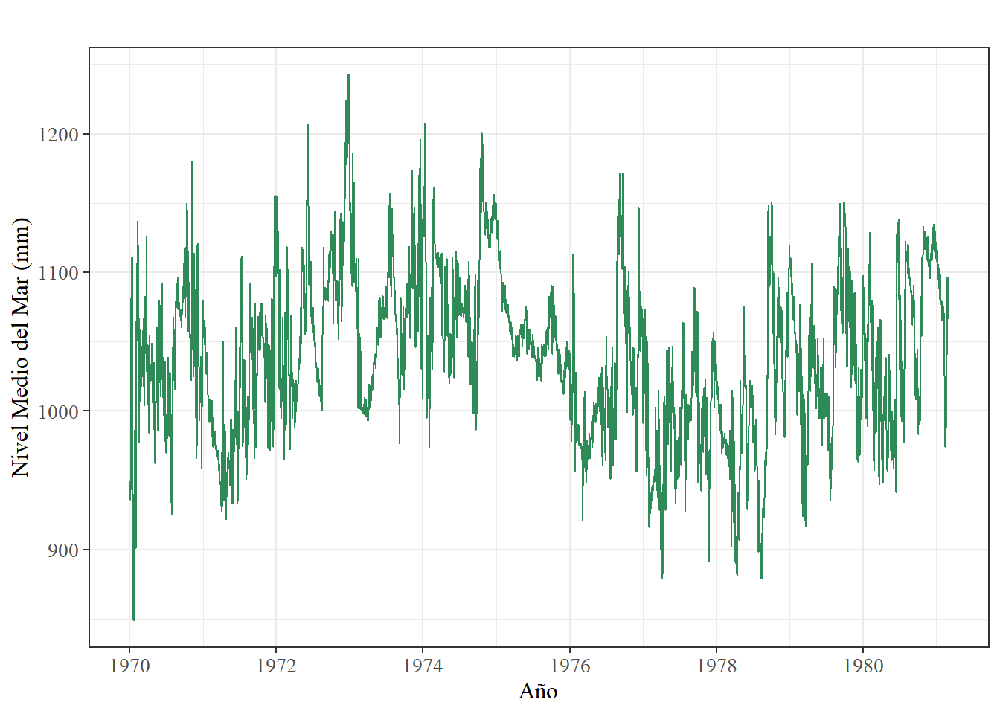
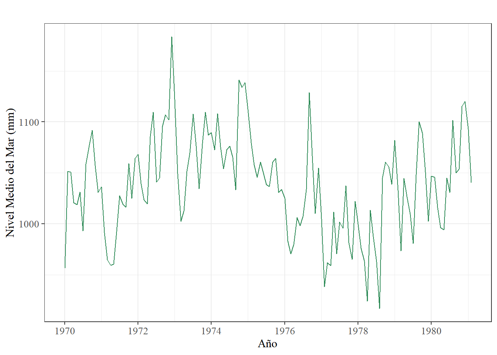
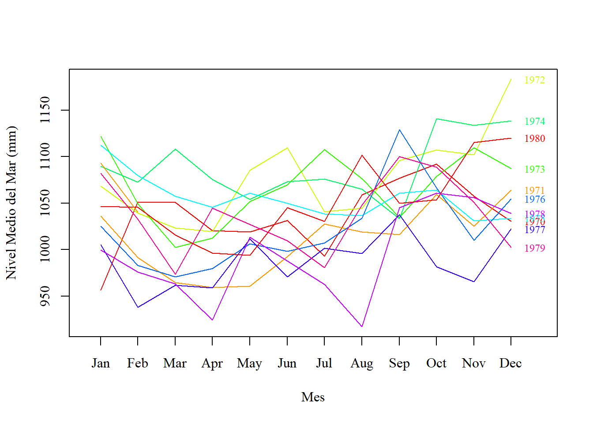
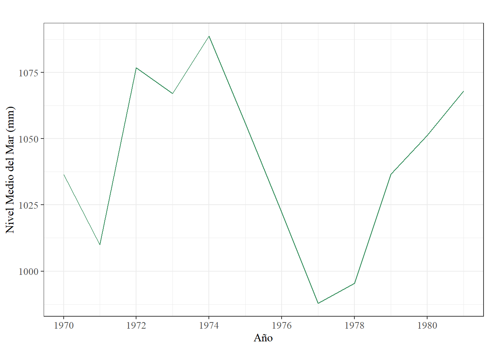
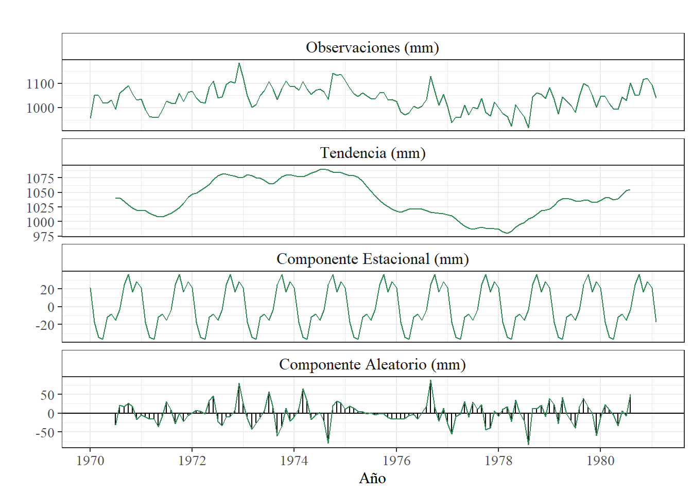
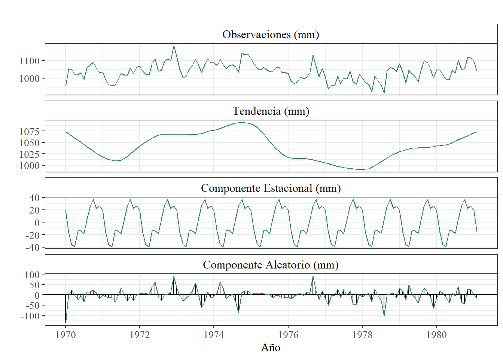

options(OutDec = ",")Cálculo de tendencia del nivel del mar en la Costa Caribe mediante los datos recolectados por el mareográfo ubicado en Limón y publicados a través del Centro de Nivel del Mar de la Universidad de Hawai para el periodo comprendido entre los años 1970 y 1981 en calidad Research Quality
1 Información de los datos utilizados
Fecha inicial: 02 de enero de 1970
Fecha final: 28 de febrero de 1981
Frecuencia de los datos: diaria
Fuente de los datos: UHSLC
Archivo: d268a.csv
Calidad de los datos: Research quality
2 Pasos para la obtención de la tendencia y otros resultados
2.1 Ingreso de los datos
library(readr)
Datos <- read_csv("https://uhslc.soest.hawaii.edu/data/csv/rqds/atlantic/daily/d268a.csv",
col_names = FALSE)2.2 Dar formato a los datos ingresados
Debido a que el formato original de fecha se organizó en distintas columnas, cada una representando el año, mes y día respectivamente, en las primeras tres columnas (X1, X2 y X3); estas fueron reunidas dentro de un nuevo conjunto (de una sola columna) de forma que esta información se una.
library(tidyr)
datos_fecha<- paste(Datos$X1, Datos$X2, Datos$X3)Posteriormente , se dió formato de fecha al nuevo conjunto de datos.
library(lubridate)
datos_fecha = ymd(datos_fecha)
class(datos_fecha)[1] "Date"Adicionalmente, las mediciones que se encontraban en la cuarta columna (X4) fueron almacenadas dentro de la variable “Mediciones”.
Mediciones <- Datos$X4Una vez síntetizados los datos necesarios para la generación de la serie temporal, estos fueron reunidos nuevamente dentro un mismo marco de datos. Se le agregó el día del año al conjunto con la finalidad de facilitar el proceso a la hora de generar la serie temporal.
datos1 <- cbind.data.frame("Fecha (yyyy-mm-dd)" = datos_fecha,
Medición = Mediciones, Año = Datos$X1)
datos1$DOY <- strftime(datos1$`Fecha (yyyy-mm-dd)`, format = "%j")
head(datos1) Fecha (yyyy-mm-dd) Medición Año DOY
1 1970-01-02 946 1970 002
2 1970-01-03 949 1970 003
3 1970-01-04 936 1970 004
4 1970-01-05 943 1970 005
5 1970-01-06 967 1970 006
6 1970-01-07 969 1970 0072.3 Definición de los datos faltantes
En primera instancia, se debe definir bajo qué condiciones se considerará a una medición como dato faltante, en este caso, los datos faltantes serán todas aquellas mediciones que tengan un valor igual a -32767.
datos1$Medición[datos1$Medición=="-32767"] <- NASeguidamente, se realizó el cálculo del porcentaje de datos faltantes presentes en el conjunto de datos.
Porcentaje_MD <- (sum(is.na(datos1$Medición))/ length(datos1$Medición))*100
Porcentaje_MD[1] 35,77036Adicionalmente, se genera un resumen general de los datos.
summary(datos1) Fecha (yyyy-mm-dd) Medición Año DOY
Min. :1970-01-02 Min. : 849 Min. :1970 Length:4076
1st Qu.:1972-10-16 1st Qu.: 994 1st Qu.:1972 Class :character
Median :1975-08-01 Median :1030 Median :1975 Mode :character
Mean :1975-08-01 Mean :1034 Mean :1975
3rd Qu.:1978-05-16 3rd Qu.:1075 3rd Qu.:1978
Max. :1981-02-28 Max. :1243 Max. :1981
NA's :1458 3 Generación de gráfico preliminar
Inicialmente, los datos contenidos en la variable Mediciones, se transformaron a formato “time stamp” para posteriomente ser utilizados como una serie temporal.
ts_datos1 <- ts(data = datos1$Medición,
start = c(datos1[1,3], datos1[1,4]), #Fecha de inicio
frequency = 365.25,) #Frecuencia de los datos
class(ts_datos1)[1] "ts"El gráfico preliminar tiene como objetivo mostrar las condiciones actuales del conjunto de datos sin aplicar ningún tratamiento a los mismos.
library(ggplot2)
library(ggfortify)#permite a ggplot soportar objetos ts
PrevPlot <- autoplot(ts_datos1, colour = 'seagreen') +
ggtitle("")+
xlab("Año")+
ylab("Nivel Medio del Mar (mm)")+
theme_bw() +
theme(axis.title.x = element_text(size =12, family = 'serif'),
axis.title.y = element_text(size =12, family = 'serif'),
axis.text = element_text(size =10, family = 'serif'))
show(PrevPlot)
Con el mismo proposito de contemplar un panorama general de los datos, se realizó un gráfico de estacionalidad anual, en donde es posible observar el comportamiento de la marea por año, según la disponibilidad de datos.
library(forecast)
PrevPlot2 <- seasonplot(ts_datos1,
type = "l",
main = "",
col= rainbow(12),
year.labels = TRUE,
labelgap = 0.35,
cex = 0.75,
xlab = "Día del año",
ylab = "Nivel Medio del Mar (mm)",
family = "serif",
size = 12
)+
theme_bw()+
theme(plot.title = element_text(face = 'bold', size = 14))
show(PrevPlot2)NULL4 Identificación de datos irregulares
Como primer paso, se utilizó la función “tsoutliers” de manera que pueda indicar la presencia de datos irregulares.
out_ts_datos1 <- tsoutliers(ts_datos1)
out_ts_datos1$index
integer(0)
$replacements
numeric(0)Con el objetivo de realizar un análisis visual, se generó un diagrama de bigotes para identificar la presencia de datos atípicos dentro del conjunto. Esto no significa que los datos se hayan medido mal, únicamente muestra qué mediciones se salen de la normalidad con respecto al resto de los datos.
box_datos1 <- ggplot(datos1, aes(x=`Fecha (yyyy-mm-dd)`, y=Medición))+
geom_jitter(colour = "darkgrey", size = 0.1)+
geom_boxplot(outlier.colour = "seagreen", fill = "transparent")+
xlab("Año")+
ylab("Nivel Medio del Mar (mm)")+
theme_bw()+
theme(text = element_text(family = 'serif', size = 12))
show(box_datos1)
5 Tratamiento de los datos
Una vez identificados los datos faltantes y los datos irregulares, se realizó una limpieza al conjunto de datos mediante la herramienta “tsclean” generando el resultado de manera automática. Su función, en mayor medida, consistió en rellenar los datos faltantes de manera que la serie se complete.
library(forecast)
clean_ts_datos1 <- tsclean(ts_datos1)
plot_diario <- autoplot(clean_ts_datos1, colour = 'seagreen', main = " ")+
xlab("Año")+
ylab("Nivel Medio del Mar (mm)")+
theme_bw() +
theme(plot.title = element_text(hjust = 0.5, size = 14, family = 'serif', face = 'bold'),
axis.title.x = element_text(size =12, family = 'serif'),
axis.title.y = element_text(size =12, family = 'serif'),
axis.text = element_text(size =10, family = 'serif'))
show(plot_diario)
summary(clean_ts_datos1) Min. 1st Qu. Median Mean 3rd Qu. Max.
849 1000 1039 1039 1078 1243 Además, se recolectaron los datos ya tratados dentro de un nuevo marco de datos.
c_datos1 <- cbind.data.frame("Fecha (yyyy-mm-dd)" = datos1$`Fecha (yyyy-mm-dd)`,
Medición = clean_ts_datos1)
head(c_datos1) Fecha (yyyy-mm-dd) Medición
1 1970-01-02 946
2 1970-01-03 949
3 1970-01-04 936
4 1970-01-05 943
5 1970-01-06 967
6 1970-01-07 9695.1 Suavizado de la serie
Para suavizar la serie se empleó una metodología sencilla de generación de promedios, por lo que, en primera instancia, para igualar la frecuencia de los datos con respecto al PSMLS se generaron datos de frecuencia mensual.
library(dplyr)
c_datos1$Fecha <- floor_date(c_datos1$`Fecha (yyyy-mm-dd)`, "month")
head(c_datos1) Fecha (yyyy-mm-dd) Medición Fecha
1 1970-01-02 946 1970-01-01
2 1970-01-03 949 1970-01-01
3 1970-01-04 936 1970-01-01
4 1970-01-05 943 1970-01-01
5 1970-01-06 967 1970-01-01
6 1970-01-07 969 1970-01-01prom_mensual = c_datos1 %>%
group_by(Fecha)%>%
summarise("Promedio" = mean(Medición, na.rm = TRUE))
prom_mensual = prom_mensual %>%
mutate(Fecha = ymd(Fecha)) %>%
mutate_at(vars(Fecha), funs(year, month))
prom_mensual$Fecha <- format(as.Date(prom_mensual$Fecha, "%Y-%m-%d"))
prom_mensual$Epoca <- round(as.numeric(as.POSIXlt(prom_mensual$Fecha, format = "%Y-%m-%d", origin = "1970-01-01"))/86400)
head(prom_mensual)# A tibble: 6 × 5
Fecha Promedio year month Epoca
<chr> <dbl> <dbl> <dbl> <dbl>
1 1970-01-01 956. 1970 1 0
2 1970-02-01 1052. 1970 2 31
3 1970-03-01 1051. 1970 3 59
4 1970-04-01 1021. 1970 4 90
5 1970-05-01 1019 1970 5 120
6 1970-06-01 1031. 1970 6 151Con la finalidad de generar la gráfica de la serie temporal con el suavizado de datos con frecuencia mensual, se generó el conjunto de datos de las mediciones promediadas en formato time stamp. Y posteriormente se generó tanto el gráfico de visualización como el gráfico estacional correspondiente.
ts_prom_mensual <- ts(data = prom_mensual$Promedio,
start = c(prom_mensual[1,3], prom_mensual[1,4]),
frequency = 12)
class(ts_prom_mensual)[1] "ts"plot_mensual <- autoplot(ts_prom_mensual, colour = 'seagreen', main = " ")+
xlab("Año")+
ylab("Nivel Medio del Mar (mm)")+
theme_bw() +
theme(plot.title = element_text(hjust = 0.5, size = 14, family = 'serif', face = 'bold'),
axis.title.x = element_text(size =12, family = 'serif'),
axis.title.y = element_text(size =12, family = 'serif'),
axis.text = element_text(size =10, family = 'serif'))
show(plot_mensual)
También se generó el gráfico de visualización estacional de manera que la información se pueda apreciar de manera más clara y comparable con respecto a los datos facilitados por el PSMSL.
EstPlot_mensual <- seasonplot(ts_prom_mensual,
type = "l",
main = " ",
col= rainbow(10),
year.labels = TRUE,
labelgap = 0.35,
cex = 0.75,
xlab = "Mes",
ylab = "Nivel Medio del Mar (mm)",
family = "serif",
size = 12,
)
show(EstPlot_mensual) [1] 1 2 3 4 5 6 7 8 9 10 11 12Nuevamente se realizó un suavizado sobre el conjunto de datos utilizando la misma metodología de promedios, en esta ocasión promediando los datos con una regularidad anual.
c_datos1$Año <- floor_date (c_datos1$`Fecha (yyyy-mm-dd)`, "year")
head(c_datos1) Fecha (yyyy-mm-dd) Medición Fecha Año
1 1970-01-02 946 1970-01-01 1970-01-01
2 1970-01-03 949 1970-01-01 1970-01-01
3 1970-01-04 936 1970-01-01 1970-01-01
4 1970-01-05 943 1970-01-01 1970-01-01
5 1970-01-06 967 1970-01-01 1970-01-01
6 1970-01-07 969 1970-01-01 1970-01-01prom_anual = c_datos1 %>%
group_by(Año)%>%
summarise("Promedio" = mean(Medición, na.rm = TRUE))
prom_anual = prom_anual%>%
mutate(Año = ymd(Año))%>%
mutate_at(vars(Año), funs(year))
head(prom_anual)# A tibble: 6 × 2
Año Promedio
<dbl> <dbl>
1 1970 1036.
2 1971 1010.
3 1972 1077.
4 1973 1067.
5 1974 1089.
6 1975 1056.Aunado a lo anterior, se dió formato time stamp al nuevo conjunto de datos creado con los promedios anuales para generar la serie temporal correspondiente.
library(zoo)
ts_prom_anual <- ts(prom_anual$Promedio,
start = prom_anual[1,1])
class(ts_prom_anual)[1] "ts"head(ts_prom_anual)Time Series:
Start = 1970
End = 1975
Frequency = 1
[1] 1036,454 1009,895 1076,831 1067,114 1088,675 1055,767plot_anual <- autoplot(ts_prom_anual, colour = 'seagreen', main = " ")+
xlab("Año")+
ylab("Nivel Medio del Mar (mm)")+
theme_bw() +
theme(plot.title = element_text(hjust = 0.5, size = 14, family = 'serif', face = 'bold'),
axis.title.x = element_text(size =12, family = 'serif'),
axis.title.y = element_text(size =12, family = 'serif'),
axis.text = element_text(size =10, family = 'serif'))
show(plot_anual)
6 Descomposición de la serie
Inicialmente se definió el nivel de autocorrelación de la serie a través del test de Durbin-Watson.
library(lmtest)
correlacion <- dwtest(prom_mensual$Promedio ~ prom_mensual$Epoca, tol = 0.05, alternative = "two.sided")
correlacion
Durbin-Watson test
data: prom_mensual$Promedio ~ prom_mensual$Epoca
DW = 0,67464, p-value = 5,341e-15
alternative hypothesis: true autocorrelation is not 0Al corroborar que la serie tiene autocorrelación, se determinó si la misma es estacional o no, mediante el test de Mann-Kendall
library(Kendall)
TestMK <- MannKendall(ts_prom_mensual)
summary(TestMK)Score = -687 , Var(Score) = 270300,3
denominator = 8911
tau = -0,0771, 2-sided pvalue =0,18701A modo de corroboración, se realizó también el test de Dickey-Fuller con la finalidad también de determinar si la serie es estacional o no estacional.
library(tseries)
dft <- adf.test(ts_prom_mensual)
dft
Augmented Dickey-Fuller Test
data: ts_prom_mensual
Dickey-Fuller = -3,2591, Lag order = 5, p-value = 0,08108
alternative hypothesis: stationaryUna vez establecida la autocorrelación y no estacionalidad de los datos, se procede a realizar la descomposición de la serie. Primeramente a través de la metodología clásica, seguido de la metodología stl.
library(ggplot2)
library(forecast)
d_clasica <- decompose(ts_prom_mensual)
autoplot(d_clasica, range.bars = FALSE)+
ggtitle(paste0(
" "
)) +
labs(x = "Año")+
theme_bw()+
theme(
title = element_text(family = "serif", size = 12, face = "bold", hjust = 0.5, vjust = 0.5),
axis.text = element_text(family = "serif", size = 10),
axis.title.x = element_text(face = "plain", size = 12),
axis.title.y = element_text(face = "plain", size = 12),
strip.background = element_rect(fill = "white"),
strip.text = element_text(family = "serif", size = 12)
)+
geom_line(colour = 'seagreen')+
facet_wrap(~parts,
labeller = labeller(
parts = c(data = "Observaciones (mm)",
trend = "Tendencia (mm)",
seasonal = "Componente Estacional (mm)",
remainder = "Componente Aleatorio (mm)")),
ncol = 1,
scales = "free_y")
library(ggplot2)
library(forecast)
d_stl <- stl(ts_prom_mensual, s.window = "periodic", robust = TRUE)
autoplot(d_stl, range.bars = FALSE)+
ggtitle(paste0(
" "
)) +
theme_bw() +
theme(
title = element_text(family = "serif", size = 12, face = "bold", hjust = 0.5, vjust = 0.5),
axis.text = element_text(family = "serif", size = 10),
axis.title.x = element_text(face = "plain", size = 12),
axis.title.y = element_text(face = "plain", size = 12),
strip.background = element_rect(fill = "white"),
strip.text = element_text(family = "serif", size = 12)
) +
labs(x = "Año") +
geom_line(colour = "seagreen")+
facet_wrap(~parts,
labeller = labeller(
parts = c(
data = "Observaciones (mm)",
trend = "Tendencia (mm)",
seasonal = "Componente Estacional (mm)",
remainder = "Componente Aleatorio (mm)"
)
),
ncol = 1,
scales = "free_y"
)
7 Calculo de la tasa de cambio del nivel medio del mar
Mediante una regresión lineal, se calculó la tasa relativa del cambio del nivel medio del mar, dando como resultado la velocidad del movimiento en mm/años
tendencia_rltv <- tslm(ts_prom_mensual ~ trend)
tendencia_rltv <- tendencia_rltv$coefficients[2] *12
tendencia_rltv trend
-1,81983 En este caso, no se realizó el cálculo de la tasa de tendencia absoluta debido a que no se cuenta con los datos de movimiento vertical para la época.